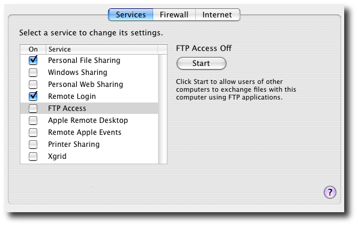
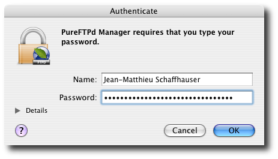
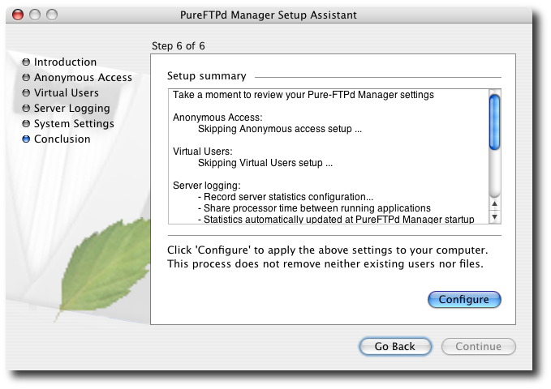
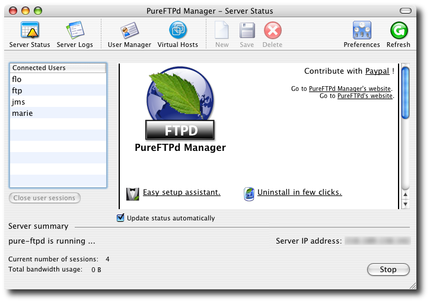
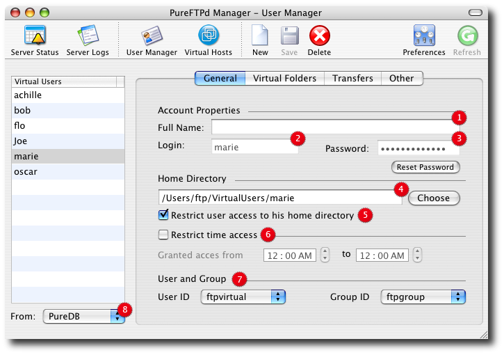

PureFTPd Manager Quickstart1. Install PureFTPd ManagerBefore you start PureFTPd Manager installation process, make sure Mac OS X default FTP server is not running. You can check this in the Sharing preference pane of your System Preferences.

Mount PureFTPd Manager Disk Image on your computer and click PureFTPd Manager.mpkg and complete the installation process. If the version of your Mac OS is older then 10.3 (ie: you are using Mac OS 10.2.8), please Customize your installation in order to install pureftpd-jaguar.pkg. If you are using Mac OS 10.3 or above, you do not need to customize the installation process. Once the installation process has been completed, you can start PureFTPd Manager from your Applications folder. 2. Running PureFTPd Manager for the first timePureFTPd Manager needs system administrator privileges in order to execute properly. When prompted, please authenticate with an administrator username and password.

If this is the first time you start PureFTPd Manager on your computer, PureFTPd Manager Setup Assistant will help you defining the default system settings required to run pureftpd on your Mac. Default settings suggested by this assistant should be fine for most of you. So if you want to keep it simple, just click continue and go through all configuration step until the end.

Everything set up by this assistant can be modified later on by running the assistant again or through PureFTPd Manager Preferences. To learn more about PureFTPd Manager Setup Assistant, click here. 3. Welcome to PureFTPd ManagerWhen PureFTPd Manager starts, it displays your FTP server status. To start your server, click the Start button at the bottom right of this window.

Your FTP server is now running. Other people can access your FTP server at ftp://your_server_ip using anonymous login, a user account on your machine, or using a FTP virtual user account. On the screenshot above, have a look at the connected users. ftp always refers to an anonymous connection, jms is a Mac OS X real Mac OS X user account (one you use to log into Mac OS X), and flo is a FTP virtual user account (a special account, only for FTP). 4. Add FTP-only user accountsRight now, your FTP server is set up so that only a person that currently have a valid username and password on your computer can login to your system (except for anonymous connections). The next thing you probably want to do is create FTP-only user accounts in order to enable and control access to your files using dedicated user accounts. Go to the User Manager and click on the New button in the toolbar.

A New User will be added to the virtual users list and automatically selected. Specify a login, a password, and a home directory for this one. In the above example, I used marie as login, and /Users/ftp/VirtualUsers/marie for her home directory. Notice the Restrict user access to his home directory checkbox. When selected, a user logged into your server won't be able to browse your entire server's hard drive. You can always extend a user's access to specific parts of your computer using Virtual Folders. Please read the virtual users help pages to learn more about that. The User and Group option lets you map a virtual user to a particular system user and group. You won't have to change this except for advanced setup. If unsure, always select the user and group created by PureFTPd Manager Setup Assistant: ftpvirtual and ftpgroup. Your server is readyYou are now ready to serve files to the world. Your FTP server allows connection to your system for standards Mac OS X users, anonymous users and a special set of FTP-only virtual users.
Happy FTPin'.
|